.
.Version: 2.0 - Mai 1999
Luc Bonameau, Stéphane Bonhomme
Ce manuel a été réalisé pour l'utilisation d'Amaya sous Unix. Certaines fonctions présentées dans ce manuel peuvent être légèrement différentes dans la version Windows.
Les ressources suivantes (en anglais) complètent les informations présentes dans le Manuel d'utilisation.
Amaya permet de créer de nouveaux documents HTML et d'éditer des documents existants. Les documents créés à l'aide d'Amaya sont destinés à être diffusés sur le World Wide Web et à être consultés par les navigateurs les plus courants.
Amaya intègre des fonctions de navigation et de publication sur un serveur Web. Grâce à ces fonctions, il n'est pas nécessaire de disposer d'un navigateur annexe pour visualiser les pages créées ni de posséder un logiciel dédié pour le transfert des documents créés.
Grâce à son interface WYSIWYG similaire à celle d'un traitement de texte, Amaya ne nécessite pas la connaissance du format HTML pour créer des pages. Cependant, pour exploiter au mieux les capacités de l'éditeur, il est souhaitable de connaître quelques bases.
Les fichiers hypertexte disponibles sur le Web sont décrits à l'aide d'un langage appelé HTML ou "Hypertext Markup Language". Il ne s'agit pas d'un langage de programmation, mais d'un langage dit de description.
L'information contenue dans un fichier HTML est de nature textuelle. Ces fichiers sont donc lisibles par un humain (à la différence des fichiers produits par la plupart des traitements de texte). L'information contenue dans le document est de trois natures :
Les balises et les attributs permettent également de lier des objets (ou ressources) externes à la page proprement dite. C'est le cas par exemple des liens hypertextes, mais aussi des images en ligne.
Lors de la consultation d'un document avec un navigateur, les balises, leurs attributs sont interprétées par le navigateur, les ressources externes (images) sont chargées et une image du document formaté est construite pour être présentée à l'utilisateur.
| Voici un exemple simple de fichier HTML : | et le même document formaté par un navigateur : |
<html>
<head>
<title>Le lancer de rayons</title>
<meta name="GENERATOR" content="amaya V2.0">
</head>
<body>
<h2>Introduction au ray-tracing</h2>
<ul>
<li><a href="foncray.html">
Fonctionnement du ray-tracing</a>
<li><a href="accelere.html">
Comment accélérer le traitement
</a>
</ul>
<p>
<a href="../index.html">
<img src="backpro.jpg" alt="ds"
height="55" width="70">
Retour au sommaire du site
</a>
</p>
</body>
</html>
|
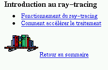 |
Chaque balise d'un fichier html peut contenir d'autres balises ainsi que du texte, mais une fin de balise ne peut être présente que si toutes les balises contenues ont été fermées. Les balises forment ainsi une hiérarchie, ou structure que l'on peut visualiser dans Amaya :
| 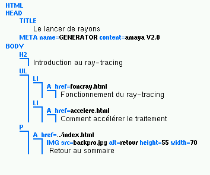 |
Vue structure d'un document HTML
La structure d'un document HTML n'est pas laissée à l'apréciation du concepteur du document. Anfin que les différents navigateurs puisent interpréter de manière (à peu près) similaire les balises, des règles dictent les possibilités d'occurence des balises dans un document, ces règles portent sur :
Amaya permet d'éditer de manière interactive un document HTML sans avoir à se soucier de ces règles de composition des documents : en effet, l'outil ne permet que de créer les balises permises aux emplacement adéquat, le cas échéant, Amaya recompose localement la structure du document pour respecter les règles.
Amaya exploite la structure hiérarchique des documents html pour en proposer une représentation arborescente. Elle permet d'améliorer la qualité et la facilité d'édition des pages web.
Amaya permet à la fois de naviguer et d'éditer. Cette double fonction facilite par exemple la mise à jour de pages web sur des serveurs distants. Cette fonction permet également de composer des pages en utilisant de l'information collectée sur le web.
Amaya intègre l'utilisation des modèles de page et supporte les feuilles de styles ou CSS.
Les CSS sont très utiles pour donner une apparence commune à un ensemble de pages, elles permettent de modifier cette apparence sur un grand nombre de pages en une seule commande.
Amaya propose plusieurs vues synchronisées du document. L'utilisateur dispose ainsi de plusieurs point de vue du même document (vue formatée, structure, liens, table des matières, etc. ).
Amaya intègre les fonctions de publication directe sur un serveur web. La sauvegarde des documents HTML sur un serveur distant est transparente et ne nécessite pas l'utilisation d'un logiciel spécifique.
La création de liens hypertexte dans Amaya se fait en deux clics de souris. Lors de la publication d'un document, les liens sont mis à jour automatiquement.
Amaya permet d'éditer interactivement des formules mathématiques.
Les fonctionalités primordiales d'Amaya concernent l'édition de documents, c'est pourquoi les fonctionalités de navigation sont limitées. En particulier, Amaya ne permet pas
Certaines pages incluent des images animées au format gif. Lors de l'ouverture d'une telle page, Amaya affiche la première image de l'animation.
Certains sites web divisent la fenêtre du navigateur en différentes zones, par exemple pour afficher le sommaire du site. Lors de la navigation sur ces sites, Amaya n'affiche pas les différents cadres à l'écran, mais une liste de liens sur chacun de ces cadres.
Lors de sa première utilisation, Amaya est configuré avec des dialogues en anglais. Il est possible de configurer l'éditeur pour utiliser le français comme langue de dialogue.
Pour mettre les dialogues en Français :
La boîte de dialogue General Preferences s'ouvre.
Amaya propose deux mode d'utilisation :
Le bouton vous permet de passer d'un mode à l'autre.
Amaya permet de consulter des pages HTML disponibles sur des serveurs distants, ces pages sont identifiées pas une adresse URL (Uniform Resource Locator), par exemple http://www.w3.org/Amaya/index.html. L'URL contient le protocole de communication utilisé pour acceder à une ressource (sur le web : http) le nom du serveur (www.w3.org) et la localisation de la ressource sur le serveur (/Amaya/index.html). Avec Amaya, il est possible d'acceder aux pages de deux façons :
Si l'URL saisie ou le lien est incorrect, le message suivant "ERREUR: L'URL recherchée n'est pas accessible. Le site ou le serveur distant pourrait être en panne ou n'existe pas.Essayer plus tard." est affiché dans la fenêtre du document.
Il est possible de configurer Amaya pour permettre le suive de liens hypertextes par un simple clic. Le comportement d'Amaya est alors similaire à celui des navigateurs les plus courants :
Vous pouvez modifier le délai du double clic dans cette même boîte de dialogue. Entrez un nombre dans le champ Délai du double clic.
Il est possible d'interrompre le transfert d'une page en cours de chargement en cliquant le bouton de la barre d'outils.
Il est possible de retourner à la page précédemment consultée, ou de revenir aux pages plus récentes à la suite d'un retour à la page précedente en cliquant les boutons ou avec les commandes Précédent / Suivant du menu Fichier.
La fonction première d'Amaya est la création de documents HTML. Grâce à ses fonctions de navigation, Amaya permet également d'éditer des documents existants sur le web. Dans cette partie, nous montrerons également comment utiliser des modèles de page prédéfinis pour créer de nouveaux documents HTML.
Avec Amaya il est possible de créer un document vierge ou d'utiliser un modèle prédéfini.
Créer un document vide
Créer un document à partir d'un modèle de page
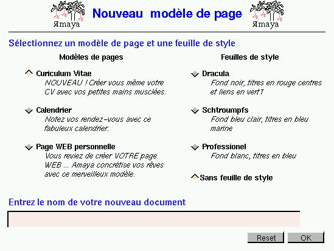
Ce formulaire permet de choisir un modèle de page parmi ceux disponibles sur le serveur de modèles (CV, Calendrier, page WEB personnelle dans l'exemple ci-dessus) et une feuille de style à appliquer au modèle.
La figure suivante présente le même modèle présenté avec deux feuilles de style différentes:
| Feuille de style "Bleu" | Feuille de style "Noir" |
| 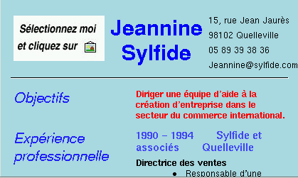 | 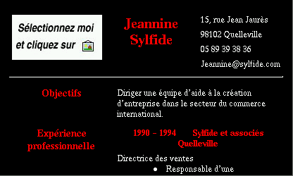 |
Vous obtenez alors le modèle choisi avec feuille de style éventuellement sélectionnée (après authentification dans le cas de l'utilisation de la publication directe).
Pour enregistrer votre document, il suffira donc de cliquer sur ou d'utiliser l'entrée Sauver du menu Fichier.
Les deux commandes suivantes permettent d'ouvrir un document :
Entrez dans le champ Ouvrir le document l'URL du document distant ou utilisez le navigateur de fichier pour localiser le fichier local à ouvrir (Cf Utiliser le navigateur de fichiers)
Le document doit alors apparaître. Dans le cas contraire un message d'erreur s'affiche dans la partie inférieure de la fenêtre Amaya. Vérifiez la validité du chemin entré et l'existence du fichier à ouvrir.
Lorsqu'un lien contenu dans un document modifié est affiché, le document pointé par ce lien s'ouvre dans une nouvelle fenêtre, ceci pour ne pas perdre les modifications sur le document contenant le lien.
Utiliser le navigateur de fichiers
Le navigateur de fichiers se présente comme le montre l'image suivante :
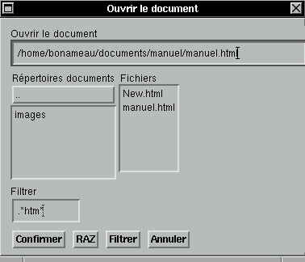Remplissez le champ Filtrer. Ce champ permet d'obtenir une recherche plus pertinente en n'affichant que les fichiers dont les noms correspondent au filtre choisi. Pour mette à jour les résultats de la recherche, cliquez sur le bouton Filtrer.
Dans l'exemple ci-dessus, nous avons filtré les fichiers .*htm*.
Nous obtiendront donc dans le champ Fichiers (champ dans lequel les résultats de la recherche sont affichés) les fichiers d'extension .shtml, .htm ou .htmx. Le répertoire manuel dans lequel nous nous trouvons ne contient comme fichiers correspondant à la description que les fichiers New.html et manuel.html.
Le champ Répertoires documents permet de naviguer dans l'arborescence du disque local.
Une fois un document ouvert ou créé, vous pouvez saisir du
texte, insérer une image ou un élément HTML à
l'emplacement défini par le curseur d'insertion .
Pour déplacer le curseur, utilisez les touches fléchées ou la souris.
Faîtes défiler le document en utilisant les barres de défilement en bas et à droite de la fenêtre ou en utilisant les touches Page Up et Page Down.
Le moyen le plus simple pour créer de nouveau éléments dans un document est de placer le curseur d'insertion à l'emplacement désiré et de choisir la commande correspondant à l'élément.
Consultez le chapitre sur les éléments HTML.
Parfois l'élément désiré ne peut être inséré exactement à la position désirée, à cause des contraintes imposées par HTML. Amaya essaie alors de créer l'élément à la position la plus proche possible du curseur d'insertion. Par exemple, si le curseur d'insertion est à la fin de la dernière ligne d'un paragraphe, lorsque vous cliquez sur le bouton 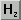 Amaya ne crée pas la nouvelle entête à cette position (qui serait invalide), mais après le paragraphe.
Pour changer le titre du document,
Pour sauver un fichier, vous pouvez utiliser
On l'utilise pour préciser les paramètres d'enregistrement du document HTML.
Pour utiliser la commande sauver comme
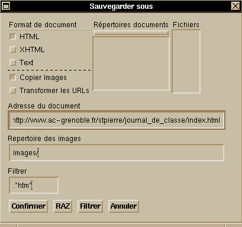
Vous pouvez y insérer une URL ou une adresse locale.
Aidez vous du navigateur de fichiers.
L'adresse de ce répertoire est relative.
Dans l'exemple de l'image ci-dessus, les images du document index.html seront enregistrées dans le répertoire http://www.ac-grenoble.fr/stpierre/journal_de_classe/images/
Remarque : Dans le cas où une session a échoué avant que vous ayez pu sauver vos modification, Amaya sauvegarde les documents courants. Il vous sera proposé de les charger au prochain démarrage d'Amaya.
Cliquez sur 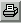 ou sur l'entrée Imprimer du menu fichier.
Les paramètres d'impression peuvent être modifiés avec l'entrée Paramétrer et imprimer du menu Fichier. (Cf Paramètres d'impression)
Ces paramètres permettent d'imprimer la table des matières, la table des liens ou l'URL du document, de créer un fichier PostScript, de spécifier une alimentation manuelle.
La sélection définit la portée d'une commande d'édition.
Amaya représente le document en interne de façon structurée.
Le mode de sélection qu'elle propose est plus puissant que celui des éditeurs classiques.
Cette sélection peut se faire aussi bien sur du texte que sur des éléments HTML (tableaux, listes, images)
La sélection courante apparaît par défaut en bleu foncé sur fond orange.
Différents moyens de sélectionner du texte sont disponibles.
Cliquez sur le bouton gauche pour déplacer le point d'insertion.
Pour sélectionner du texte, déplacez la souris tout en maintenant le bouton gauche enfoncé et relâchez-le lorsque le texte désiré est sélectionné
Les quatre touches de direction du clavier déplacent le point d'insertion dans les quatre directions.
En combinant ces touches avec la touche Shift, vous pouvez étendre la sélection à partir du point d'insertion.
Cliquez sur le bouton gauche pour déplacer le point d'insertion sur le début de la zone à sélectionner.
Cliquez sur le bouton gauche combiné avec la touche Shift sur le dernier caractère de la zone à sélectionner.
On entend par structure tout élément HTML autre que du texte simple.
Quelques structures : paragraphes, tableaux, listes ...
Lors de la sélection d'une structure, il faut toujours avoir sous les yeux la barre de sélection en bas à droite : 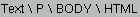
Ce raccourci peut être utilisé lorsqu'un élément est sélectionné ou lorsque le curseur est placé quelque part dans le document.
Une pression sur la touche Esc sélectionne l'élément "parent" dans la structure du document. Appuyer plusieurs fois sur la touche Esc permet de sélectionner des structures jusqu'à la racine du document.
Le type du premier élément sélectionné est affiché en bas de la fenêtre, suivi par les types des éléments englobés par la structure séparés par le caractère \.
Cette fonctionnalité s'avère très utile lorsque la structure du document est complexe.
Voici un exemple d'utilisation de cette fonction :
| 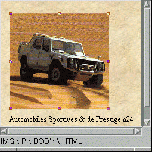 | 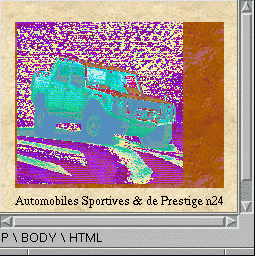 | 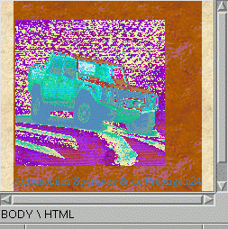 |
| Sélection de l'image
(IMG \ P \ BODY \ HTML) |
Première pression sur Esc
Le paragraphe est sélectionné (P \ BODY \ HTML ) |
Deuxième pression sur Esc
Le corps tout entier de la page est sélectionné ( BODY \ HTML) |
Ne sortez pas de l'image avant d'avoir relâché le bouton.
Utiliser la vue structure pour sélectionner un élément est un moyen sûr, efficace et pratique.
Ouvrer cette vue en choisissant l'entrée Vue structure du menu Vues.
Voici un exemple de sélection:
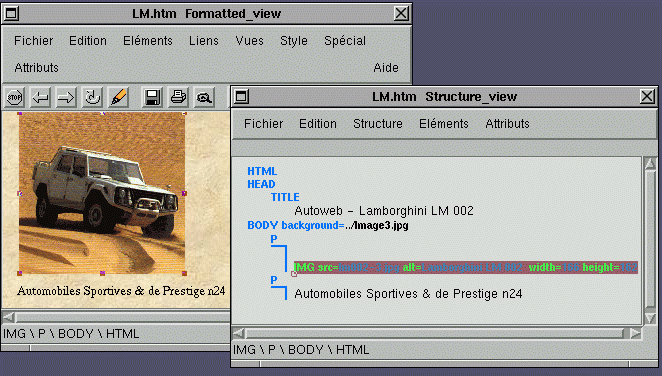
L'image a été sélectionnée dans la fenêtre affichant le structure du document (à droite)
Cette sélection est immédiatement répercutée sur la vue formattée (carrés sur les bords de l'image)
La barre de sélection nous indique que l'élément sélectionné est une image : IMG \ P \ BODY \ HTML
La norme HTML propose 3 sortes de listes
Créer une liste
Transformer du texte en liste
Pour transformer du texte en liste
Transformer un tableau en liste
Exemple :
| Tableau matériel | Liste numérotée obtenue par transformation | ||||||||||||||||
|
|
Les traits horizontaux servent à délimiter visuellement les différentes parties d'un document HTML.
Pour insérer un trait horizontal, choisissez l'entrée Trait horizontal (HR) du menu Eléments.
Les divisions englobent une partie d'un document HTML pour la délimiter structurellement du reste du document..
Elles apparaissent dans la vue structure avec le marqueur DIV.
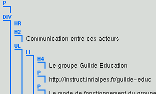
Elles servent à structurer les documents de manière plus nette.
Elles permettent en outre d'appliquer une même propriété (langue dans le cas d'un document multi-langues, police de caractères, couleur de fond...) à un ensemble d'éléments.
Pour insérer une division
Les entêtes servent à mettre du texte en relief.
Il existes plusieurs tailles d'entêtes (tailles de 1 à 6)
Pour insérer une entête, cliquez sur l'une des icônes 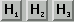 ou choisissez l'entrée Heading dans le menu Eléments.
Créer un lien interne
Pour créer un lien interne (un lien pointant sur un document local)
Pour rendre ce lien visible, cochez la case Montrer les cibles du menu Vues.
Vous voyez apparaître le symbole à côté de la cible choisie. Ces symboles ne font pas partie du document. Leur rôle est de rendre visible les cibles.
Créer un lien vers une page Web
Pour créer un lien vers une page Web
Si le lien est incorrect, Amaya affichera un message d'erreur.
Modification d'un lien
Pour modifier un lien
Vous pouvez aussi éditer l'attribut href soit dans la vue structure ou dans la vue liens.
Suppression d'un lien
Insérer une image
Pour insérer une image
 ou l'entrée Image (IMG) du menu
Eléments. Une boîte de dialogue vous propose de
choisir une image dans l'arborescence de votre disque.
ou l'entrée Image (IMG) du menu
Eléments. Une boîte de dialogue vous propose de
choisir une image dans l'arborescence de votre disque.Image de fond
Pour insérer une image de fond
Redimensionner une image
Pour redimensionner une image
Vous pouvez aussi éditer les attributs width et height (largeur et hauteur) d'une image dans la vue structure.
Exemple : IMG src=bonjour.gif alt=bonjour width=300 height=200
Créer une zone active
Une zone active (AERA) est une zone d'image associée à un lien.
Pour comprendre son utilité, imaginez que nous voulions pouvoir accéder à des guides touristique de chaque région.
Nous disposons de cette carte des régions de France.
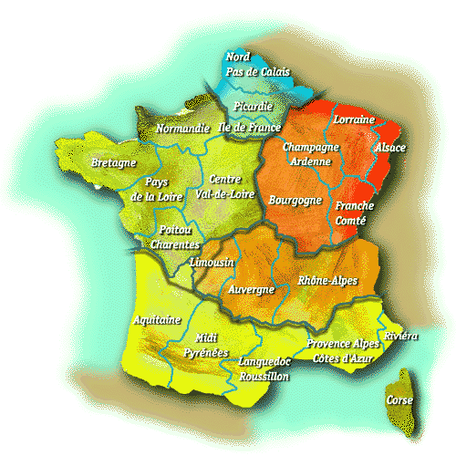
Il serait pratique de pouvoir cliquer sur la région concernée et d'avoir ainsi accès au document sue cette région..
Ceci est rendu possible par les zones actives.
Pour créer une zone active
Pour spécifier le dernier point, cliquez avec le bouton du milieu.
Exemple :
Les zones actives sont entourées d'un trait bleu.
Dans cet exemple, lorsqu'un utilisateur clique sur la roue avant, un lien le conduit vers le site http://michelin.com
S'il clique sur le motard, il accède au site http://www.motobiker.com.

|
Voici comment les zones sont affichées dans la vue structure AERA shape=circle coords=35,157,35 alt=roue avant href=http://www.michelin.com AERA shape=poly coords=108,141,96,....,122 alt=motobiker href=http://www.motobiker.com |
Modifier la géométrie d'une zone active
Vous pouvez aussi modifier les paramètres de l'attribut coord dans la vue structure.
Exemple : AERA shape=poly coords=108,141,96,....,122 alt=motobiker href=http://www.motobiker.com
Déplacer une zone active
Lorsqu'une zone active est définie, vous pouvez la déplacer
Ex : AERA shape=circle coords=56,69,24 alt=cercle href=http://www.ics.fr
Pour créer un tableau,
|
|
Les cases s'agrandiront automatiquement en fonction de l'encombrement des éléments insérés.
Sélectionnez le texte à insérer dans un tableau et appuyer sur le bouton de la barre d'outils.
Pour redimensionner manuellement une case
Vous pouvez également éditer l'attribut width du tableau dans la vue structure.
Exemple : <table border="1" width="58%">
Vous pouvez également éditer l'attribut border du tableau dans la vue structure.
Exemple : <table border="1" width="58%">
Amaya permet l'édition de formules mathématiques plus élégantes que celles que l'on peut faire avec les ressources de base à savoir les tirets et les slashs.
Sachez cependant que les formules éditées avec Amaya ne seront affichables que par ce logiciel.
Pour créer une formule mathématique
Vous pouvez aussi utiliser l'entrée Math du menu Eléments puis choisir parmi les modèles mathématiques proposés.
Pour insérer des lettres appartenant à l'alphabet grec,
Pour fermer la barre d'outil, cliquez sur le bouton Annuler de cette barre.
Amaya offre deux moyens d'éditer les attributs:
Le menu Attribut liste tous les attributs qui peuvent être associés à l'élément sélectionné.
Pour éditer un attribut
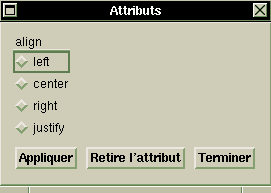
Si l'attribut peut prendre des valeurs libres (comme href dans une ancre), une boîte de dialogue s'affiche. Editez la valeur de l'attribut puis cliquez sur le bouton Appliquer.
Tous les attributs sont affichés dans la vue Structure. Les attributs dont la valeur peut être choisie sans contraintes sont affichées en noir et vous pouvez éditer leur valeur comme toute autre chaîne de caractères. Lorsque la valeur de l'attribut est affichée en bleu, vous ne pouvez pas la changer autrement qu'avec le menu Attributs.
Pour changer le type d'un élément existant, sélectionnez-le et choisissez le nouveau type dans le menu Eléments.
Vous pouvez ainsi par exemple changer un paragraphe en une liste ou en une entête.
Des transformations plus complexes sont possibles (voir Changer la structure d'un document HTML)
De simples transformations de structure peuvent être faites avec le menu Eléments (voir ci-dessus)
Des transformations plus complexes peuvent être obtenues par d'autres moyens.
La commande Transformer du menu Edition réalise des transformations de structure complexes.
Cette commande ouvre un menu qui liste toutes les transformations applicables à la sélection courante.
Il est par exemple possible de transformer une liste en tableau.
Il est possible de grouper un ensemble de paragraphes, d'entêtes, de listes, de tables,... dans une division.
Des éléments successifs peuvent être unis, même s'ils ne sont pas au même niveau dans la structure du document.
L'union peut être réalisée à l'aide des touches Retour arrière et Effacer. Lorsque le point d'insertion est à la fin d'un élément, utilisez la touche Effacer, lorsqu'il est au début, utilisez la touche Retour arrière. Dans les deux cas, ces touches n'effacent aucun caractère, mais rassemblent les éléments qui sont séparés par un marqueur de structure.
Lorsque le point d'intersection est à l'intérieur d'un élément, ces deux touches effacent le caractère précédent et suivant, comme d'habitude.
Les sections entêtes (éléments ) peuvent être automatiquement numérotées selon la structure du document.
La commande Numéroter les sections du menu Spécial est un booléen qui permet d'activer ou de désactiver cette fonction.
Lorsqu'elle est activée, cette fonction attribue à toutes les entêtes un numéro. Ce numéro est calculé en fonction du type de l'entête ( et de sa position dans la structure du document.
Ces numéros sont affichés en bleu devant les entêtes et ne peuvent être édités directement.
Ils seront automatiquement mis à jour lors de la création, la modification ou la suppression d'une entête.
Ces numéros apparaissent aussi dans la vue Table des matières.
Lors de l'impression du document, les numéros de sections n'apparaîtront que si la fonction est activée.
Appliquer et mettre à jour des attributs style
Chacune des quatre entrées du menu Style appelle un boîte de dialogue permettant d'associer un attribut style aux éléments sélectionnés.
Cliquez dans une cellule dans la palette avec le bouton gauche pour choisir la couleur d'avant plan, cliquez sur le bouton du milieu pour choisir la couleur d'arrière plan.
Dans les boîtes de dialogue ouvertes par ces commandes, le bouton Défaut permet de supprimer l'information de style correspondant.
Les feuilles de style donnent la possibilité de contrôler la présentation d'un document HTML sans toucher à sa structure de base.
Elles permettent par exemple de définir la couleur, la fonte des entêtes, des tableaux ou de tout autre élément HTML. Par la suite, vous pourrez retrouver ce style lorsque vous créez un nouveau tableau ou une nouvelle entête.
Il existe principalement deux façons d'introduire des feuilles de style dans une page HTML :
On décrit les styles de la page dans l'entête du document (HEAD) entre les balises <STYLE> et </STYLE>
<style type="text/css"> .relief { color: #E50073} </style>
On décrit le style des pages dans un document d'extension .css extérieur au fichier HTML. Le lien se fait par la balise <LINK> dans l'entête du document.
Exemple: <link href="/templates/ambiamce.css" rel="STYLESHEET" type="text/css">
Voici un exemple de ficher externe :
| body { background : feffef; color : black; }
h5,h6 {text-align : left; color : 99994f; } h4 {text-align : left; color : 99994f; } .background {background : green; color : white; } |
ambiance.css
Lorsqu'un attribut de style a été associé à un élément (Cf Changer les attributs style d'un élément), vous pouvez utiliser cet élément comme modèle pour créer ou modifier une classe.
Pour créer ou mettre à jour une classe, .
Une boîte de dialogue s'ouvre et affiche une liste de sélecteurs CSS.
Cette liste contient les classes définies pour le document courant (.par_rouge, .H2_vert)
Elle n'affiche pas les types d'éléments auxquels des styles sont associés (.TABLE, .H2). Ils sont en revanche visibles dans la structure du document.
Cliquez sur le bouton Confirmer.
Le style de l'élément sélectionné est alors associé au sélecteur choisi et l'attribut style est enlevé du cet élément.
Son contenu est déplacé sur l'élément style, dans l'entête (HEAD) du document. Tous les éléments qui correspondent au sélecteur sont affichés avec le nouveau style.
Lorsque vous avez de nouvelles classes avec la commande Créer une règle, vous pouvez associer ces classes aux éléments du document.
Pour associer une classe à un élément,
Une boîte de dialogue affiche les classes existantes.
L'élément sélectionné est alors affiché avec le style associé à la classe choisie.
Vous pouvez aussi associer une classe avec un élément en utilisant l'entrée class du menu Attribut.
L'entrée Feuilles de style du menu Style permet d'accéder à un ensemble de commandes.
Ces commandes permettent de manipuler les feuilles de style externes.
Ajouter une feuille de style
Cette commande ajoute un lien vers une feuille de style externe dans le document courant.
Elle aura pour effet de rajouter une ligne <LINK> dans l'entête de ce document HTML.
Lorsque cette commande est activée, le pointeur se change en main directionnelle (symbole des liens).
Si le feuille de style désirée est déja ouverte dans une fenêtre Amaya, il suffit de cliquer dans cette fenêtre pour créer ce lien.
Sinon, l'utilisateur doit cliquer sur le document. Cette action ouvrira une boîte de dialogue permettant d'entrer l'URL de cette feuille de style.
Ouvrir une feuille de style
Cette commande ouvre une nouvelle fenêtre dont le contenu sera la feuille de style externe.
Elle ouvre la boîte de dialogue CSS qui propose de choisir une feuille de style parmi les feuilles qui ont été précédemment ajoutées.
Sélectionnez une feuille de style dans la liste affichée et cliquez sur Confirmer.
Activer /Désactiver une feuille de style
Ces commandes permettent d'activer ou d'enlever les effets d'une des feuilles de styles externes au le document sourant.. Elle n'affecte pas le lien entre le document courant et cette feuille de style.
Retirer une feuille de de style
Cette commande permet de retirer une feuille de style du document courant. Elle agit comme la commande Désactiver mais elle retire en plus le lien entre le document et la feuille de style externe.
Amaya dispose d'un vérificateur d'orthographe multi-langues.
Un même document peut être écrit en plusieurs langues et interprété comme tel par Amaya grâce à l'attribut lang.
Cet attribut peur être associé à tout élément du document, même à un simple mot.
Amaya permet en outre d'enrichir le dictionnaire en permettant à l'utilisateur d'y ajouter des mots.
Pour associer une langue à un élément,
La langue courante est indiquée dans le champ Langue héritée.
Après avoir appliqué une ou des langues aux éléments du document
La boîte de dialogue suivante s'affiche
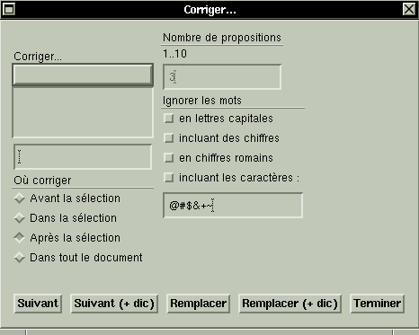
Cette boîte de dialogue vous permet de modifier les paramètres de vérification et d'interagir avec le correcteur.
Si votre document ne contient aucune faute, le message Pas trouvé est affiché dans le coin inférieur gauche de la boîte de dialogue.
L'exemple ci-dessous illustre le cas où une faute d'orthographe a été trouvée.
| 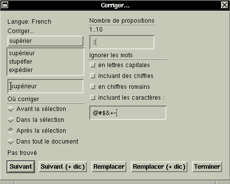 | La langue dans laquelle est effectuée la correction est
affichée en haut à gauche (French)
Si ce langage ne correspond pas au mot affiché dans la zone Corriger, changez l'attribut lang de ce mot (ou du document). Voir Associer une langue à un élément. Le mot erroné (supérier dans l'exemple) apparaît dans la zone Corriger. Sous ce mot sont affichées les propositions pour le corriger (supérieur, stupéfier, expédier) |
Cette sélection peut être directement éditée dans le cas où le correcteur n'a pas trouvé la bonne correction.
Une fois ce bouton pressé et l'élément replacé, le correcteur passe à la faute suivante.
Les boutons suivis de (+ dic) accomplissent les même tâches. Cependant elle ajoutent le mot "erroné" dans le dictionnaire de l'utilisateur.
Les commandes Couper / Copier / Coller sont disponibles dans le menu Edition.
Ces commandes sont utilisées dans de nombreux logiciels.
Nous en rappelons ici le fonctionnement.
Attention : Il est impossible de réaliser le copier/coller si les fenêtres de travail ne sont pas issues de la même application Amaya.
La recherche d'un mot ou d'un texte est une fonction très utilisée en édition. Elle permet de chercher un mot ou un ensemble de mots adjacents.
Pour rechercher du texte
Dans le cas contraire, le message Pas trouvé s'affiche.
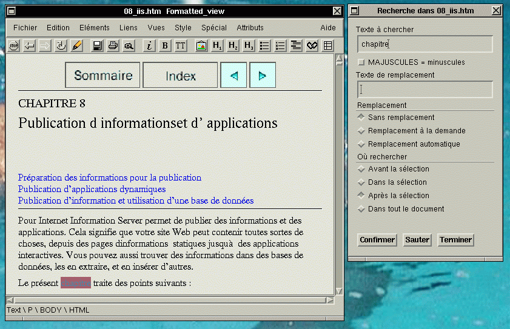
Remplacer du texte
Procédez de la même manière que pour une recherche et entrez simplement le texte de remplacement dans le champ Texte de remplacement.
Choisissez ensuite un mode de remplacement :
Lorsque le texte est trouvé, un clic de souris sur le bouton Confirmer permet d'effectuer le remplacement.
Le remplacement est effectué automatiquement sur toutes occurrences du texte recherché. Il faut donc utiliser cette commande avec précaution.
Il est souvent utile de rassembler une collection de documents HTML en un seule document.
Imaginez par exemple une documentation technique en ligne dont la première page est la table des matière.
Chaque rubrique de la table des matière pointe sur un chapitre. Cette organisation est très utile pour la consultation avec un navigateur. En revanche, il faudra imprimer tous les documents un par un pour imprimer la collection.
Pour créer un livre à partir de tous ces documents
Pour la sélection, il suffit de cliquer sur l'attribut href.
Vous pouvez ouvrir et fermer une vue à n'importe quel moment.
Les vues sont synchrones c'est à dire qu'une modification ou une sélection sur l'une est immédiatement reportée sur l'autre
Pour ouvrir une vue, choisissez la commande Montrer de la vue correspondante dans le menu Vues .
Cette commande peut aussi être utilisée pour rappeler une fenêtre qui était en arrière plan.
Pour fermer la vue, utilisez la commande Fermer la vue du menu Fichier de cette vue.
Amaya offre plusieurs vues simultanée d'un document.
Il est donc possible de travailler sur un document en ayant à sa disposition plusieurs fenêtres représentant des vues différentes du document.
Les vues disponibles sont:
Cette vue est la vue par défaut lorsque vous éditez un document. C'est la vue que vous avez l'habitude de voir lorsque vous éditez un document avec la plupart des outils d'édition HTML.
Contrairement aux autres vues, elle affiche les éléments graphiques tels que les images ou les listes.
Cette vue monte la structure actuelle du document. Chaque élément est représenté par son marqueur HTML, suivi de ses attributs sur la même ligne.
Les éléments qu'il contient sont en dessous contre une ligne verticale bleue qui montre l'étendue de l'élément
Les parties affichées en noir peuvent être directement éditées.
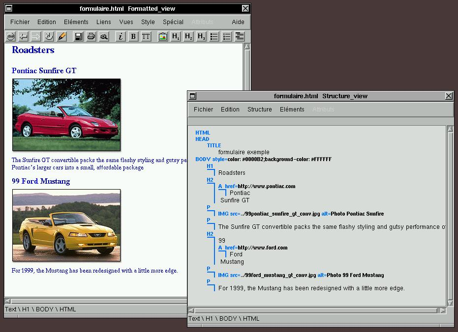Cette vue n'affiche que du texte plein.
Elle permet d'avoir un aperçu de la façon dont un navigateur texte plein affiche la page.
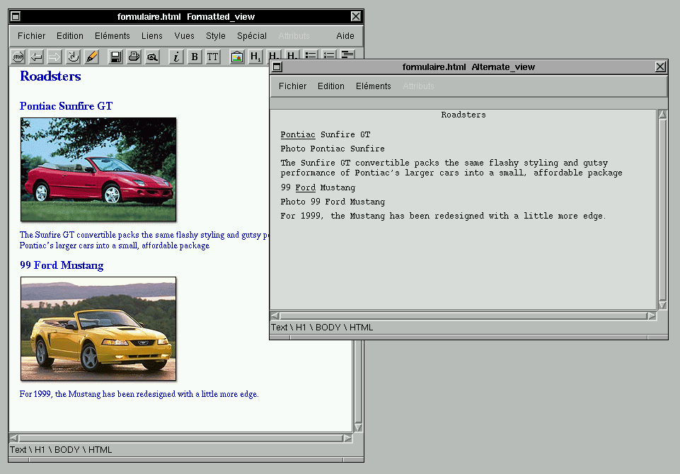Cette vue montre toutes les ancres du document, ainsi que les URL sur lesquelles elles pointent.

Cette vue affiche la table des matières du document.
Comme la fonction Numéroter les sections, cette vue se base sur les entêtes
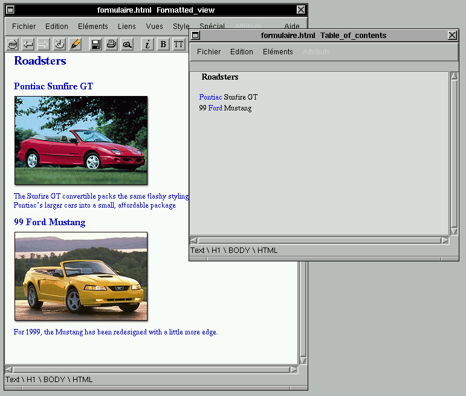Copyright © 1997 W3C (MIT, INRIA, Keio ), All Rights Reserved. W3C liability, trademark, document use and software licensing rules apply. Your interactions with this site are in accordance with our public and Member privacy statements.